Visão
Apresentar novas tecnologias para a medicina diagnóstica, priorizando e melhorando a vida humana.
Triagem neonatal e pré-natal · Desde 1994
Pioneira em triagem neonatal e pré-natal, a Intercientifica desenvolve e fabrica no Brasil kits, reagentes, softwares e cartões de coleta personalizados para laboratórios.
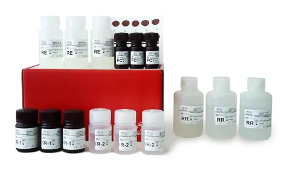
Quem somos
A Intercientifica é uma empresa pioneira e inovadora, especializada em triagem neonatal e pré-natal, com fabricação 100% nacional de kits, reagentes, softwares e cartões de coleta personalizados para laboratórios.
Fundada em 1994, com objetivo social de pesquisar, desenvolver produtos e serviços que garantam eficiência e precisão em programas de triagem de doenças neonatais e pré-natais.
São 30 anos de experiência na área de triagem neonatal e pré-natal. Neste período a Intercientifica já produziu mais de 48 milhões de análises, beneficiando a qualidade de vida de milhares de pacientes e de seus familiares, pois com o diagnóstico precoce foi possível obter acesso aos tratamentos específicos e desenvolver uma vida saudável.
Apresentar novas tecnologias para a medicina diagnóstica, priorizando e melhorando a vida humana.
Fornecer produtos e serviços de qualidade, através de investimentos constantes na pesquisa, desenvolvimento e aprimoramento de seus produtos, de maneira independente, procurando sempre atender às necessidades do mercado. Buscar continuamente soluções por meio de novas ferramentas, tecnologias e produtos. E disponibilizar suporte constante aos clientes.
Vídeo institucional
Assista ao vídeo institucional, com legendas, e conheça a história e o trabalho da empresa na triagem neonatal e pré-natal.
Nossos produtos
Duas linhas complementares, desenvolvidas e fabricadas no Brasil.
Kits para ensaios múltiplos simultâneos, utilizando a plataforma xMAP®, da Luminex®. Vários analitos de uma mesma amostra são analisados em um único ensaio.
Comparação com outras metodologias disponíveis no mercado, segundo dados da Intercientifica.
Triagens atendidas
Kits para a triagem de doenças em recém-nascidos, com opções de ensaio manual, semiautomatizado e automatizado, conforme o produto.
Triagens atendidas
Detecção simultânea dos marcadores TSH, T4, 17-OH e IRT na triagem de Hipotireoidismo Congênito, Hiperplasia Adrenal Congênita e Fibrose Cística.
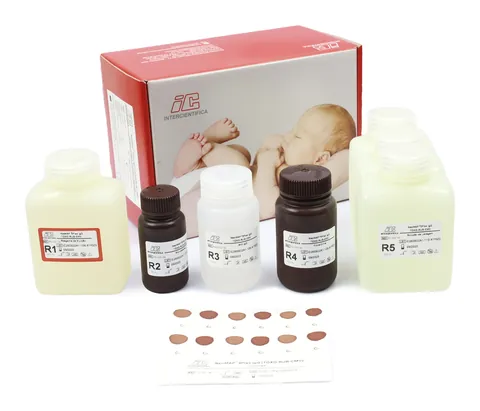
Determinação semiquantitativa de anticorpos IgG contra Toxoplasma gondii, Rubéola e Citomegalovírus, em formato multiplex.
Determinação semiquantitativa de anticorpos IgM contra Toxoplasma gondii, Rubéola e Citomegalovírus, em formato multiplex.
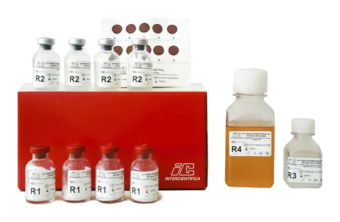
Quantificação da Fenilalanina na triagem neonatal da Fenilcetonúria.
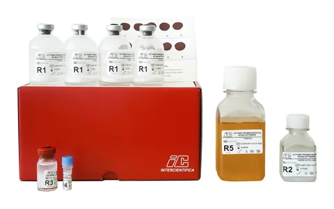
Quantificação da Galactose Total na triagem neonatal da Galactosemia.
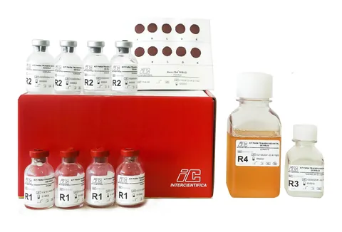
Quantificação de Leucina, Isoleucina e Valina na triagem da Doença do Xarope de Bordo (MSUD).
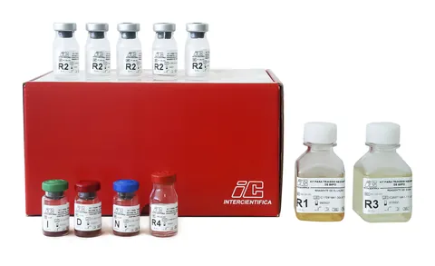
Avaliação da atividade enzimática da Glicose-6-fosfato Desidrogenase na triagem da Deficiência de G6PD.
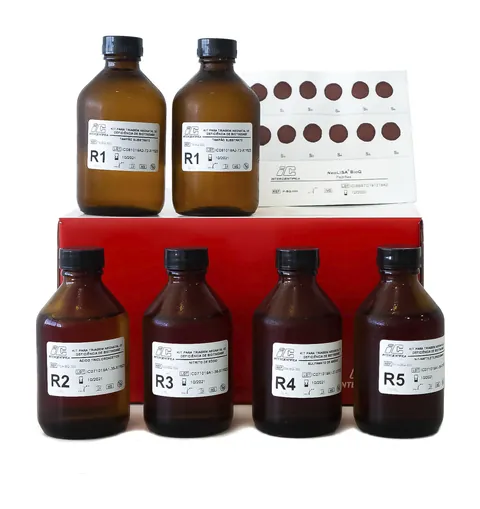
Avaliação da atividade enzimática da Biotinidase na triagem da Deficiência de Biotinidase.
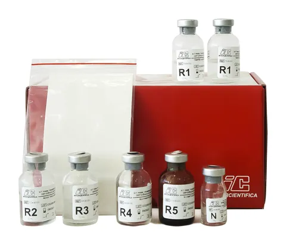
Avaliação da atividade enzimática da Biotinidase na triagem da Deficiência de Biotinidase.
Precisa de ficha técnica, cotação ou validação para o seu laboratório?
Solicitar informaçõesSoluções completas
Além dos kits, a Intercientifica entrega o que o laboratório precisa ao redor do ensaio.
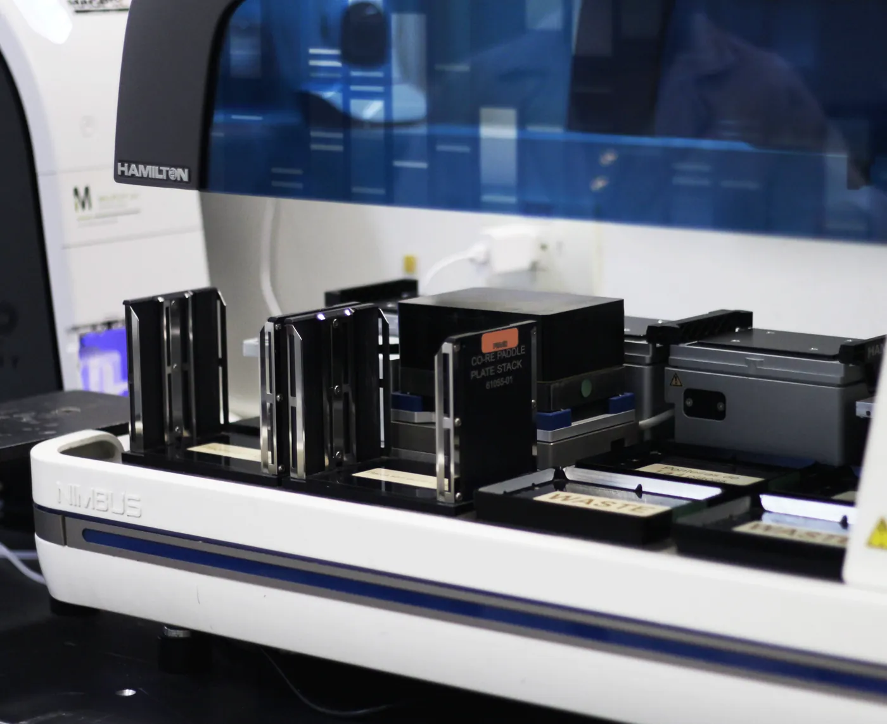
Automação completa para as linhas NeoLISA® e NeoMAP®, utilizando os sistemas da Hamilton® Robotics e Opentrons®.
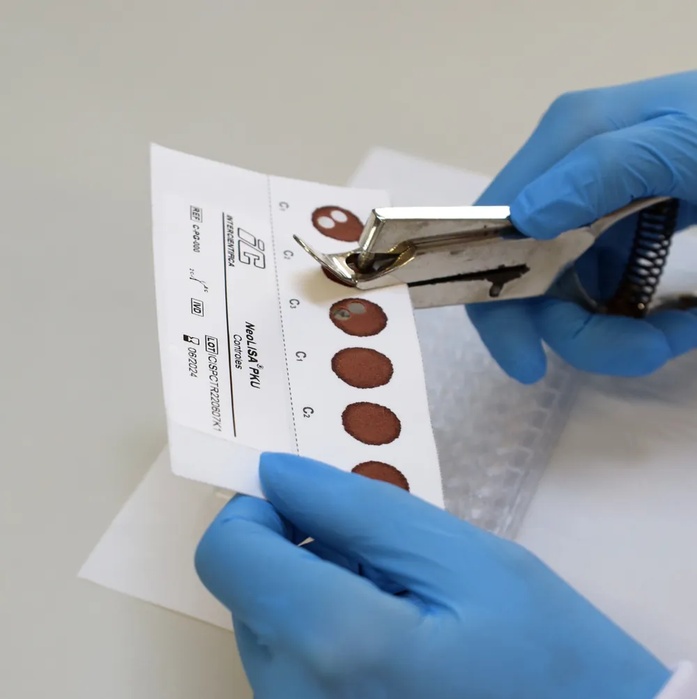
Cartões de coleta de sangue personalizados para laboratórios.
Nossa equipe
A qualidade e a excelência dos nossos produtos se devem ao alto nível de qualificação do nosso time de colaboradores e pesquisadores formado por doutores, mestres, especialistas em suas respectivas áreas, com experiências em órgãos internacionais de pesquisa e de ensino superior, tendo diversos trabalhos científicos publicados em revistas e jornais científicos nacionais e internacionais.
A nossa equipe de profissionais é composta por Biólogos, Biomédicos, Farmacêuticos, Químicos, Engenheiros e Administradores que prezam pelo aperfeiçoamento continuado.
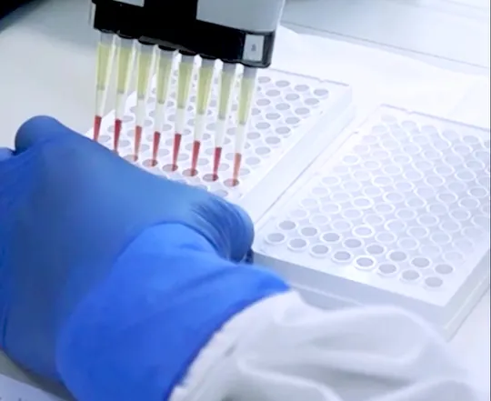
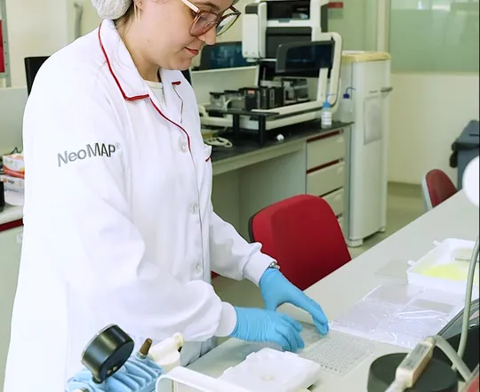
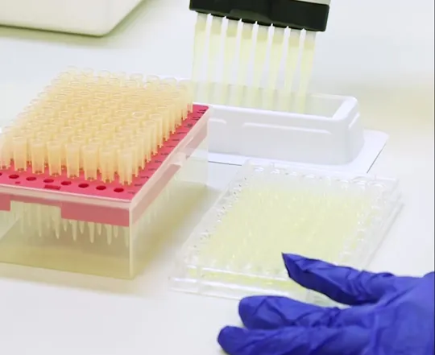
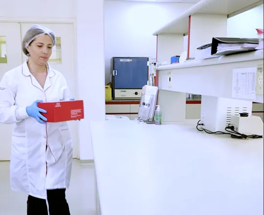
Qualidade
Nosso laboratório, bem como todos os nossos processos, procedimentos e registros atendem à certificação de Boas Práticas de Fabricação e Controle de Produtos para a Saúde, através de inspeções periódicas da autoridade sanitária brasileira, a ANVISA.
Nosso compromisso
O nosso compromisso está sustentado em três pilares: inovação, atendimento de excelência e a sustentabilidade. Investimos fortemente em pesquisas científicas e no aprimoramento dos nossos produtos e serviços para atender de forma personalizada principalmente o Mercado Nacional.
Estamos comprometidos em desenvolver soluções inovadoras para avançar ainda mais na qualidade da triagem neonatal e pré-natal, com foco na redução de insumos e custos. Para isso, os nossos laboratórios, no Brasil e nos USA, estão equipados com instrumentos de última geração e da mais alta tecnologia.
Os nossos Kits NeoMAP®, sistema multiplex, analisam simultaneamente, em um único ensaio, vários analitos de uma mesma amostra, reduzindo em até 85% o consumo médio de reagentes e em 58% o consumo de energia elétrica, quando comparados a outras metodologias disponíveis no mercado. Isso permite uma economia não somente de tempo e dinheiro, como também a redução da quantidade de amostras de paciente, materiais e recursos, reduzindo o impacto ambiental.
Nós entendemos que a nossa saúde e a saúde do nosso planeta, ou seja, o meio ambiente, estão intrinsecamente ligados. Por isso, o nosso compromisso é servir o presente, sem comprometer o futuro.
Trajetória
Nasce em São José dos Campos, dedicada à triagem pré-natal e neonatal.
Uma das primeiras parceiras de tecnologias licenciadas xMAP® na América Latina.
Recebe o Certificado de Boas Práticas de Fabricação, Classe de Risco III.
Vencedora na Região Sudeste, categoria Micro e Pequena Empresa.
Reconhecida pelo melhor case de inovação no setor da saúde.
Participa do APHL/ISNS Newborn Screening Symposium, em Sacramento, EUA.
Artigos e notícias
14 notícias e 25 artigos científicos publicados pela Intercientifica.
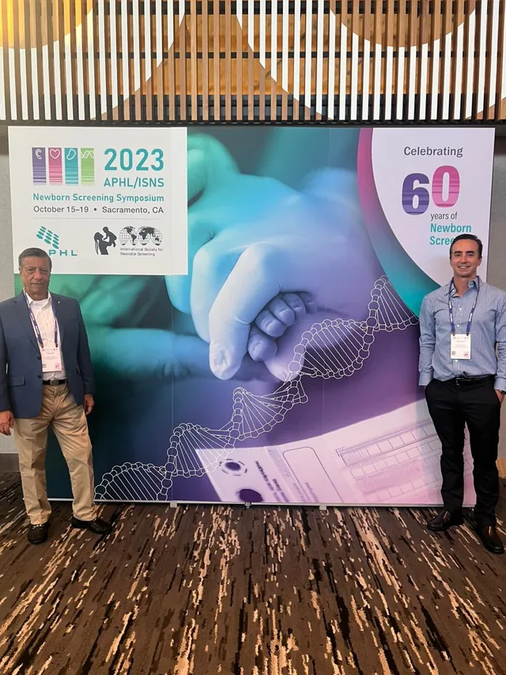
Congresso Internacional de Triagem Neonatal APHL/ISNS Newborn Screening SymposiumÉ com grande satisfação que compartilhamos com vocês os resultados do nosso trabalho… 1.750.300 análises já realizadas com o Kit NeoMAP® 4PLEXEste marco representa o primeiro passo para a mais importante implementação no mercado de…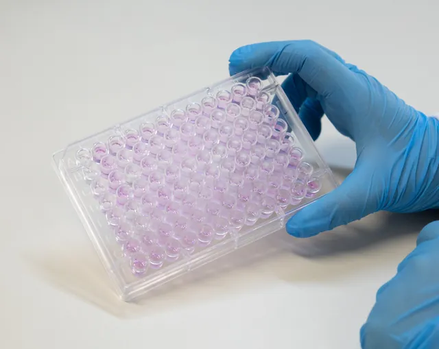
Biotinidase – Teste Qualitativo ou Quantitativo?Em 2015, a Secretaria de Atenção à Saúde, que integra o Departamento de Atenção Especializada…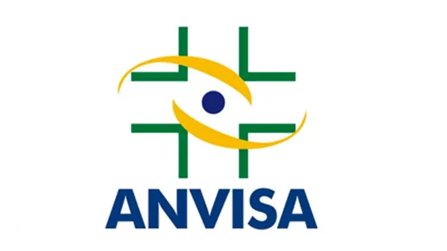
Intercientifica recebe da ANVISA o Certificado de Boas Práticas de Fabricação Classe de Risco IIIEm 2009, a INTERCIENTIFICA recebeu o Certificado de BPF (Boas Práticas de Fabricação) da…Contato
Para saber mais sobre nossos produtos, entre em contato com nossa equipe científica.